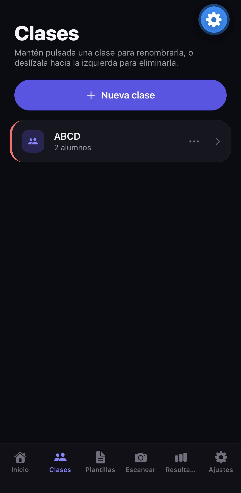
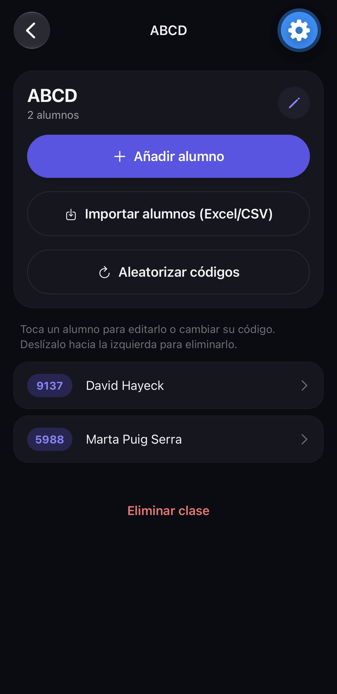
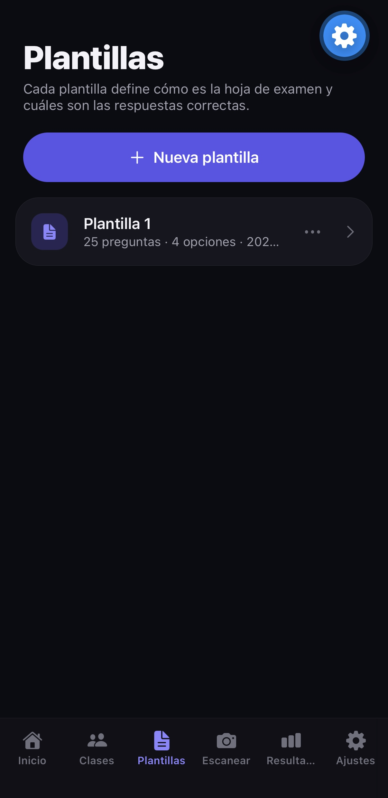
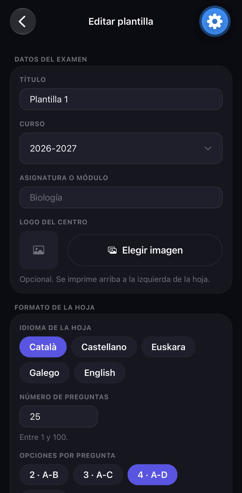
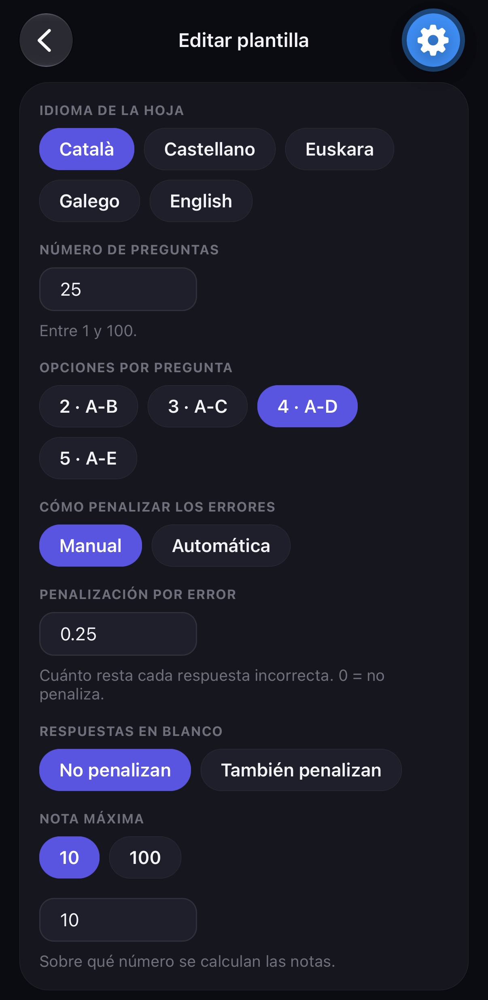
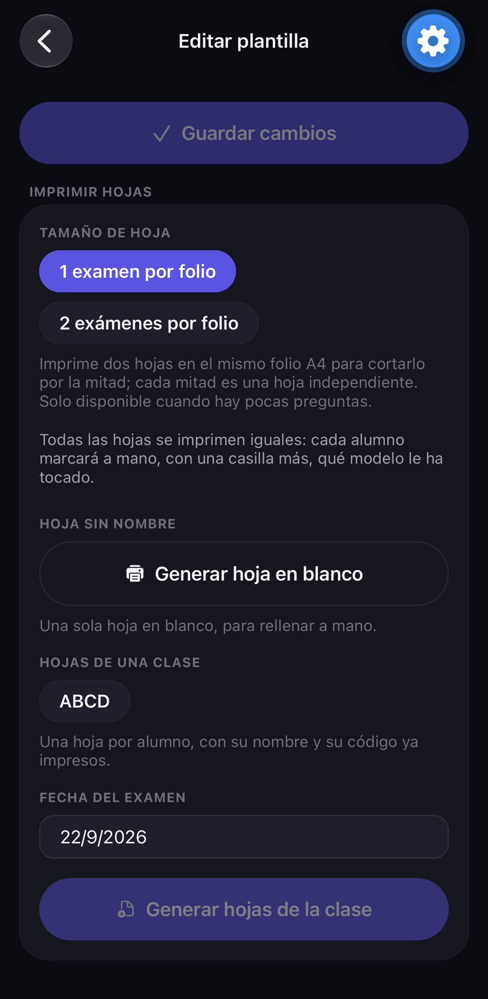
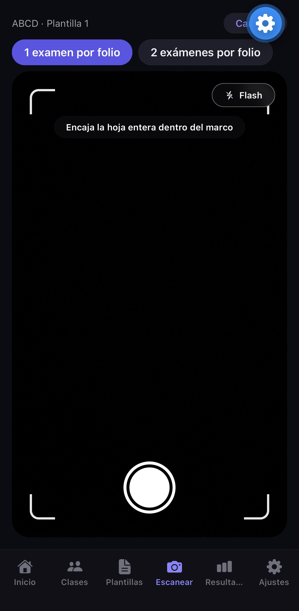
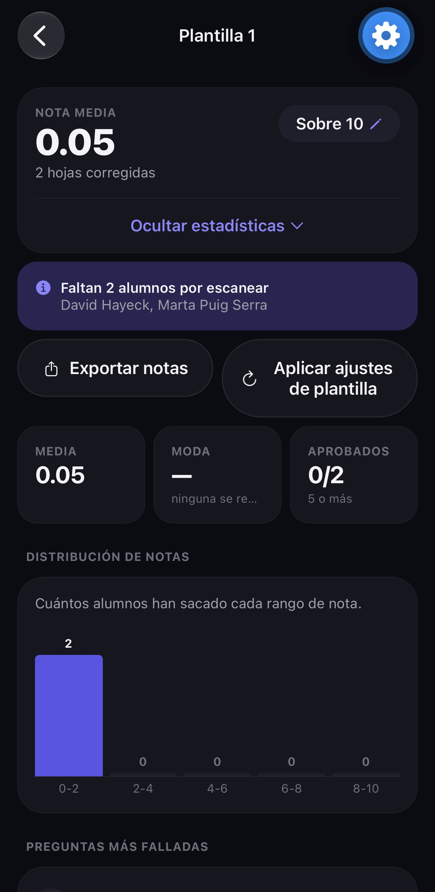

FastGrade corrige exámenes tipo test con la cámara del móvil. No hace falta saber de informática: si sabes hacer una foto con el móvil, sabes usar FastGrade.
Cómo funciona, en 5 pasos
- Crea tu clase. En la pestaña Clases, crea el grupo y añade a tus alumnos. La app le da a cada alumno un número de 4 cifras, que es como su «carnet» en el examen.
- Crea el examen. En la pestaña Plantillas, indica cuántas preguntas tiene y marca cuál es la respuesta correcta de cada una.
- Imprime las hojas de respuestas desde esa misma plantilla. Los alumnos contestan rellenando las burbujas con bolígrafo.
- Haz una foto de cada hoja en la pestaña Escanear. La app lee las respuestas y pone la nota sola.
- Mira las notas en la pestaña Resultados: la nota de cada alumno, las estadísticas de la clase y un archivo para abrir en Excel.
Es tu examen dentro de la app. Guarda cuántas preguntas tiene, cuál es la respuesta buena de cada una y cómo quieres puntuarlo. La creas una vez y la puedes usar con todas tus clases.
Es la primera pantalla que ves al abrir la app. De un vistazo te dice qué tienes pendiente.
El botón grande de arriba. Te lleva directamente a la cámara para corregir.
Exámenes que has empezado a corregir pero en los que aún faltan alumnos por escanear. Tócalo para ir a ese examen.
Las últimas hojas que has corregido, con el nombre del alumno y su nota.


Aquí están tus grupos y sus alumnos. Cada alumno tiene un código de 4 cifras: lo escribe en la hoja del examen para que la app sepa de quién es.
Crear una clase y añadir alumnos
- Toca Nueva clase y escribe su nombre (por ejemplo, «3.º ESO A»).
- Toca la clase para entrar.
- Toca Añadir alumno y escribe el nombre y los apellidos. El código de 4 cifras se pone solo.
- Si ya tienes la lista en un Excel, toca Importar alumnos (Excel/CSV) y elige el archivo. La app encuentra sola los nombres y apellidos: no hace falta escribirlos uno a uno.
Otras cosas que puedes hacer
Toca su nombre para cambiarle el nombre o el código, o para eliminarlo.
Aleatorizar códigos da un código nuevo a todos los alumnos de la clase a la vez.
En la lista de clases, toca los tres puntos (…) de la clase o mantenla pulsada. El color sirve para distinguirlas de un vistazo.
Desliza el dedo hacia la izquierda sobre un alumno o una clase. Cuidado: si borras una clase, se borran también sus alumnos y sus exámenes.




La plantilla es tu examen dentro de la app. Toca una plantilla de la lista para abrirla y cambiar lo que quieras. Con los tres puntos (…), o manteniéndola pulsada, también puedes duplicarla (para hacer un examen parecido sin empezar de cero) o eliminarla. Desde ese mismo menú puedes ir a Imprimir hojas.
Crear un examen, paso a paso
- En la pestaña Plantillas, toca Nueva plantilla.
- Escribe el título y, si quieres, la asignatura y el curso. Salen impresos arriba de la hoja. También puedes añadir el logo de tu centro.
- Elige el idioma de la hoja: es el idioma de los textos impresos, no el de la app.
- Escribe el número de preguntas y elige cuántas opciones de respuesta tiene cada una (de 2 a 5). Si todas las preguntas son de verdadero o falso, elige V/F.
- Decide si los errores restan y si las preguntas en blanco también restan. Si no quieres complicarte, deja la penalización en 0: así los errores no restan nada.
- Elige la nota máxima. Normalmente, 10.
- En Respuestas correctas, toca en cada pregunta la letra buena.
- Toca Crear plantilla. Si estás cambiando una plantilla que ya existía, el botón se llama Guardar cambios. Al crearla, la app te lleva directamente a la página Imprimir hojas.
Es lo que resta cada error. Por ejemplo, con 0,25, cuatro errores quitan lo mismo que da un acierto. Si eliges Automática, la app usa la fórmula habitual de los tests: con 4 opciones, cada error resta un tercio de acierto. En las preguntas de Verdadero/Falso, cada error resta un acierto entero.
Imprimir las hojas de respuestas
Al crear la plantilla, la app te lleva directamente a la página Imprimir hojas. Más adelante puedes volver a ella desde los tres puntos (…) de la plantilla en la lista, o abriendo la plantilla y bajando hasta el final. Tienes dos opciones:
Una hoja en blanco. El alumno escribe a mano su código de 4 cifras. Puedes hacer tantas fotocopias como quieras.
Una hoja por alumno, con su nombre y su código ya impresos. Elige la clase y la fecha del examen.
Si el examen tiene pocas preguntas, puedes imprimir dos hojas en cada folio y cortarlo por la mitad. Ahorras papel.
En los apartados siguientes se explica cómo dar más puntos a unas preguntas que a otras, aceptar más de una respuesta, hacer preguntas de Verdadero/Falso, trabajar con criterios de evaluación y repartir varios modelos del examen. Todo es opcional: si no lo necesitas, sáltatelo.
Normalmente todas las preguntas valen lo mismo. Si quieres que alguna cuente más (por ejemplo, porque es más difícil), puedes darle más puntos.
Cómo se hace
- Abre la plantilla.
- En Puntuación por pregunta, elige Personalizada.
- En la lista de Respuestas correctas, al lado de cada pregunta aparecen los botones − y +. Úsalos para indicar cuántos puntos vale esa pregunta.
- Encima de la lista verás el total de puntos del examen.
- Toca Guardar cambios.
Un examen de 10 preguntas: las 8 primeras valen 1 punto y las 2 últimas, 3 puntos cada una. En total, 14 puntos. La nota final se sigue dando sobre 10 (o sobre la nota máxima que hayas elegido): la app hace la regla de tres sola. Un alumno que solo acierta las 2 últimas consigue 6 de 14 puntos, es decir, un 4,29.
A veces una pregunta tiene dos respuestas válidas, o te das cuenta después del examen de que estaba mal planteada y otra opción también debería valer. Puedes marcar varias letras como correctas en la misma pregunta.
Cómo se hace
- Abre la plantilla.
- En Respuestas correctas, toca todas las letras que den por buena esa pregunta. Si vuelves a tocar una letra marcada, se desmarca.
- Toca Guardar cambios.
Al corregir, si el alumno ha marcado cualquiera de esas letras, cuenta como acierto.
Ya has corregido el examen y te das cuenta de que en la pregunta 12 la B también es correcta. Abre la plantilla, toca también la B en la pregunta 12 y guarda. Luego ve a Resultados, abre ese examen y toca Aplicar ajustes de plantilla: la app vuelve a calcular todas las notas sin tener que escanear otra vez.
Puedes hacer un examen entero de verdadero o falso, o mezclar preguntas de verdadero o falso con preguntas normales de opciones (A, B, C, D) en el mismo examen.
Todo el examen de Verdadero/Falso
- Abre la plantilla (o crea una nueva).
- En Opciones de respuesta, toca V/F.
- En Respuestas correctas, marca en cada pregunta si la buena es la V (verdadero) o la F (falso).
- Toca Guardar cambios.
Mezclar preguntas de opciones y de Verdadero/Falso
- En Opciones de respuesta, elige cuántas opciones tienen las preguntas normales (por ejemplo, 4).
- En Respuestas correctas, al final de la fila de cada pregunta hay un botón V/F con el borde discontinuo. Tócalo en las preguntas que sean de verdadero o falso: esa pregunta pasa a tener solo las opciones V y F. Si lo vuelves a tocar, vuelve a ser una pregunta normal.
- Marca la respuesta correcta de cada pregunta y toca Guardar cambios.
En un examen de 20 preguntas con 4 opciones, conviertes la 5, la 12 y la 18 en Verdadero/Falso. En la hoja impresa, esas tres preguntas tienen solo dos burbujas, V y F, y el resto tienen A, B, C, D. Al escanear, la app sabe de qué tipo es cada pregunta.
V/F en castellano, catalán y gallego; T/F en inglés; E/G en euskera.
Cada pregunta resta según sus opciones: un error en una de Verdadero/Falso resta un acierto entero, y uno en una de 4 opciones, un tercio.
Todos los modelos se imprimen en la misma hoja, así que las preguntas de Verdadero/Falso tienen que estar en los mismos números en todos los modelos. Si en el modelo A la 5 es de Verdadero/Falso, en el modelo B la 5 también tiene que corresponder a una pregunta de Verdadero/Falso. Si no coincide, la app te avisa al guardar.
Si en tu programación trabajas con criterios de evaluación, resultados de aprendizaje o competencias, puedes indicar qué criterio evalúa cada pregunta. Así la app te dice, para cada alumno, qué parte de cada criterio domina. Por ejemplo: «Marta: CE 2.1 → 90 %, CE 2.3 → 40 %».
1. Crea los criterios
- Abre la plantilla.
- En la sección Criterios de evaluación, toca + Añadir criterio.
- Escribe un nombre corto, tal como aparece en tu programación (por ejemplo, «CE 2.1»).
- Repite con cada criterio que evalúe el examen.
Cada criterio que crees se guarda en tu Biblioteca de criterios (el botón de al lado de «Nueva plantilla», en la pestaña Plantillas): así puedes añadirlo con un toque a cualquier otra plantilla, sin volver a escribirlo.
Si te equivocas, toca el criterio para cambiarle el nombre o eliminarlo.
2. Indica qué evalúa cada pregunta
En la lista de Respuestas correctas, debajo de las letras de cada pregunta aparecen tus criterios. Toca los que evalúa esa pregunta (se quedan marcados). Una pregunta puede evaluar uno, varios o ninguno. Al acabar, toca Guardar cambios.
3. Consulta los resultados
En Resultados, abre el examen. En Por criterio verás la media de la clase en cada criterio.
En ese mismo examen, toca la hoja de un alumno para ver sus porcentajes.
Al tocar Exportar notas, el archivo lleva una columna por criterio con el porcentaje de cada alumno. Es justo lo que suele hacer falta para poner las notas por criterios.
El criterio CE 2.1 está en las preguntas 1, 2, 3 y 4. Marta acierta 3 de las 4: tiene un 75 % en CE 2.1. Si las preguntas valen puntos distintos, se tiene en cuenta. La penalización no se aplica aquí: lo que se mide es qué parte del criterio sabe el alumno, no su nota.
Para que no se copien, puedes repartir versiones distintas del mismo examen: el modelo A, el B, etc., con las preguntas en otro orden y las respuestas cambiadas de sitio. La app corrige cada hoja con su modelo.
Cómo funciona en el aula
Todas las hojas de respuestas se imprimen iguales. Cada alumno marca en su hoja, en la casilla del modelo, qué modelo le ha tocado (A, B, C o D). Al escanear, la app lee esa casilla y usa las respuestas correctas de ese modelo.
1. Añade los modelos
- Abre la plantilla.
- En Modelos del examen, toca + B (y + C o + D si los necesitas).
- Toca la letra de un modelo para ver y rellenar sus respuestas.
2. Marca las respuestas correctas de cada modelo
Con el modelo B elegido, marca en cada pregunta la letra que es correcta en el modelo B. Si has cambiado las respuestas de sitio, no será la misma que en el A. No pasa nada: cada modelo tiene sus propias respuestas correctas.
3. Si has cambiado el orden de las preguntas: la casilla «= A»
En los modelos B, C y D, al lado de cada pregunta hay una casilla que pone = A. Ahí escribes qué número tiene esa misma pregunta en el modelo A.
- La pregunta 1 del modelo B es la pregunta 7 del modelo A → en la pregunta 1 del B escribes 7.
- La pregunta 2 del modelo B es la pregunta 3 del modelo A → en la pregunta 2 del B escribes 3.
- Y así con todas las preguntas.
¿Para qué sirve? Los puntos de cada pregunta y los criterios de evaluación se configuran solo en el modelo A. Con esta casilla, la app sabe que la pregunta 1 del B es la misma que la 7 del A y le aplica sus puntos y sus criterios. Además, las estadísticas de preguntas más falladas y más acertadas juntan a todos los alumnos por la pregunta de verdad, les haya tocado el modelo que les haya tocado.
No toques nada: las casillas ya vienen con el mismo número que la pregunta.
Has escrito el mismo número del modelo A en dos preguntas. Cada pregunta del A tiene que aparecer una sola vez. La app no te deja guardar hasta que lo corrijas.

Cómo corregir
- Ve a la pestaña Escanear.
- Elige la clase y después la plantilla (el examen).
- Pon la hoja sobre la mesa y encájala dentro del marco blanco de la pantalla.
- Toca el botón redondo grande para hacer la foto. Si no ha salido bien, toca Repetir; si está bien, toca Usar esta foto.
- Revisa lo que ha leído la app y toca Aceptar para guardarlo. Ya puedes pasar a la siguiente hoja.
La pantalla de revisión
Verde: el alumno ha acertado. Rojo: ha marcado una respuesta equivocada. Aro verde: dónde estaba la respuesta correcta. Puedes ampliar la foto con dos dedos.
Si la app ha leído mal alguna respuesta, toca la burbuja buena en la foto o la letra en la lista de abajo.
La app lee el código de 4 cifras de la hoja y te dice de quién es. Si no lo ha leído bien, puedes cambiarlo. Si no sabes de quién es, toca Guardar sin asignar y lo asignas más tarde.
Si el examen tiene varios modelos, te dice cuál ha detectado. Si se ha equivocado, cámbialo.
Si no quieres guardar esa hoja, toca Descartar y no se guarda nada.

Aquí están todos los exámenes corregidos, agrupados por clase. Toca una clase para ver sus exámenes y toca un examen para ver todo el detalle.
Desliza la clase hacia la izquierda. Se borran sus exámenes corregidos, pero la clase y los alumnos se quedan.
Dentro de un examen
La nota media, la nota que más se repite, cuántos han aprobado, cómo se reparten las notas y qué preguntas se han fallado y acertado más. Si usas criterios de evaluación, también verás la media de la clase en cada uno. En cada pregunta verás también qué opción equivocada ha marcado más gente (por ejemplo, «Opción más marcada por error: C (8)»): te ayuda a ver qué se ha entendido mal en clase.
La lista de alumnos con su nota. Toca una hoja para ver la foto con las respuestas marcadas y, si usas criterios, los porcentajes de ese alumno.
Dentro de la hoja, toca Editar respuestas, cambia lo que haga falta y guarda. La nota se recalcula sola.
Si una hoja se ha quedado sin alumno, ábrela, toca Asignar a alumno y elige quién es.
Crea un archivo que se abre con Excel o se puede pasar a tu cuaderno de notas. Lleva el número y el nombre de cada alumno, su modelo, los aciertos, los errores, las respuestas en blanco, la nota y, si los usas, el porcentaje de cada criterio. Puedes enviarlo por correo, guardarlo en Drive, etc.
Si cambias la plantilla después de corregir (una respuesta correcta, la penalización, los puntos…), este botón vuelve a calcular todas las notas del examen. No hay que escanear nada otra vez.
Toca donde pone «Sobre 10» para calcular las notas de ese examen sobre otro número (por ejemplo, sobre 100). Solo afecta a ese examen.
Desliza una hoja hacia la izquierda para borrarla, o usa Eliminar examen completo, al final de la pantalla.
Elige cómo quieres ver la app: Claro (fondo blanco), Oscuro (fondo negro, más cómodo de noche) o Automático (cambia solo, igual que tu móvil).
El idioma de la app. «Automático» usa el de tu móvil.
Si lo activas, la app pide tu Face ID, tu huella o el código del móvil cada vez que la abres o vuelves a ella. Así nadie que coja tu móvil puede ver las notas de tus alumnos. Para activarlo, tu móvil tiene que tener puesto un código de bloqueo.
Abre esta guía.
Protege tus copias de seguridad con una contraseña. Solo la pones una vez y después se usa sola. Te la pedirá si recuperas una copia en otro móvil, así que apúntala en un sitio seguro.
Guarda todo (clases, alumnos, exámenes y notas) en un archivo que puedes llevar a Drive, al ordenador o a un pendrive. Hazlo de vez en cuando: si pierdes el móvil o cambias de móvil, no perderás nada.
Recupera tus datos a partir de una copia. Cuidado: sustituye todo lo que haya ahora en la app.
Repite la presentación que sale la primera vez que abres la app.
Escríbenos un correo si tienes dudas o problemas, o consulta la política de privacidad.
Busca un sitio con más luz o enciende el flash, pon la hoja plana y encájala bien en el marco. Tienen que verse los 4 cuadrados negros de las esquinas, y no gires ni la hoja ni el móvil. Si aun así falla alguna respuesta, puedes cambiarla a mano en la pantalla de revisión.
Arregla la plantilla y guarda. Después, en Resultados, abre el examen y toca Aplicar ajustes de plantilla.
Pasa si el alumno no escribió bien su código. Guárdala con Guardar sin asignar y, más tarde, en Resultados, ábrela y toca Asignar a alumno.
Si hiciste una copia de seguridad, instala la app en el móvil nuevo y, en Ajustes, toca Restaurar copia de seguridad.